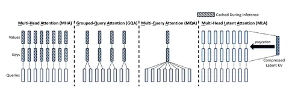

Компания DeepSeek представила MoE-модель DeepSeek-V2 на 236 миллиардов параметров. Сегодня мы разберём статью, которая рассказывает об особенностях этой модели.
Модель состоит из 236 миллиардов параметров, однако на каждый токен активно используется лишь 27 миллиардов. Это позволило значительно увеличить длину контекста до 128 тысяч токенов.
Для сравнения и оценки результатов в DeepSeek использовали dense-модель на 67b. Авторы смогли существенно снизить стоимость обучения и уменьшить размер KV-кэша, что позволило увеличить скорость генерации токенов почти в 8 раз. Эти достижения обеспечили модели преимущество в производительности.
В DeepSeek-V2 внедрён модифицированный attention, который получил название MLA (Multi-Head Latent Attention). Этот механизм позволяет кэшировать уменьшенный вектор с последующим его восстановлением, что значительно снижает объём ресурсов, необходимый для работы модели. Как устроен MLA в сравнении с MHA, GQA и MQA, вы можете увидеть на изображении выше.
При таком подходе нельзя напрямую использовать RoPE (Rotary Position Embedding) — в противном случае матрица RoPE становится неразделимой с остальными операциями, что значительно снижает эффективность вывода. В DeepSeek предложили стратегию так называемого «развязанного RoPE» (decoupled RoPE), в которой дополнительные ключи несут позиционную информацию.
Модель показала хорошие результаты в бенчмарках. В MMLU она добилась показателя в 78,3%, а в тестах на китайском языке, таких как CLUEWSC, C-Eval и CMMLU, DeepSeek-V2 показала лучшие результаты среди всех открытых моделей.
Разбор подготовил
Душный NLP
